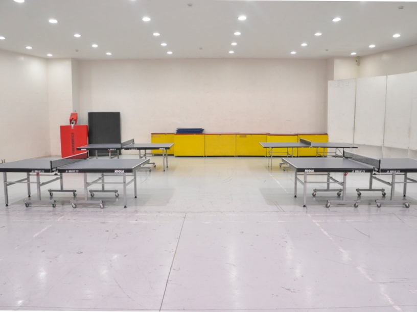

Mapúa University upholds and practices its vision and mission, core values, and educational philosophy to achieve its objectives to assist its students in the future, providing them countless opportunities in the global working arena. As the university continues to move forward with these in mind, Mapúa has accomplished numerous achievements.
Mapúa shall be among the best universities in the world.
The following is the University's Mission(s):
Mapúa University aims at the empowerment of the youth by providing education grounded on academic excellence and strength of character. Students are expected to develop the passion for mental knowledge and meritorious performance as well as the recognition of moral values as essential to growth of character. The integration of humanities and the social sciences into the technical curriculum has paved the way to the achievement of this goal.
Mapúa upholds the reinforcement of time honored values learned in school and at home directed
towards the development in the student of a strong moral fiber that will contribute to his/her
personal well-being as well as that of other members of society.
Mapúa emphasizes the importance of the following core values:
By ensuring that these core values are learned in the classroom and outside, Mapúa shall have done its share in producing men and women who live fulfilled and meaningful lives.
The Mapúa University offers its students professional and advanced scientific and engineering education with a healthy dose of the arts, letters, philosophy as well as social sciences in order to form men and women who shall possess not only technological expertise but also the human values and perspective that promote moral development.
Mapúa upholds academic excellence and social responsibility as core values.
Mapúa provides quality academic curricula that are current in content and state-of-the-art in delivery.
Mapúa provides a learning environment that encourages the exercise of creativity and the experience of discovery.
Mapúa captures the full synergy among instruction, research and extension work to heighten the learning experience of its students.
Mapúa builds linkages with industry and government in order to maintain the relevance of its academic programs and to engage in collaborative research.
The University seeks to become an international center of excellence in integrated engineering, architecture and IT education. It seeks to develop young Filipinos into highly competent engineers, architects and IT professionals in order to meet local and global human resource requirements. It seeks to generate new knowledge to heighten the nation’s competitiveness in today’s knowledge-based and global economy. It seeks to apply knowledge in order to make the world a better place for Filipinos and humankind.
Aside from the objectives stated above, the University declares the following for itself:
Mapúa is a top-notch, globally recognized University. It is included in the 2021 Quacquarelli Symonds (QS) Asia University Rankings, ranking in the Top 501-550. Coming from 3 Stars in 2017, it also managed to attain an overall rating of 4 QS Stars in 2020, garnering high ratings under eight performance categories: 5 QS Stars rating under Employability, Facilities, and Social Responsibility categories; 4 QS Stars rating under Teaching and Inclusiveness categories; 4 QS Stars rating under the Program Strength category for its Bachelor of Science in Computer Science program; and 3 QS Stars rating under Internationalization and Academic Development categories.
Various local and international accreditation bodies recognize Mapúa’s undergraduate programs. It is the first school in Southeast Asia to obtain accreditation from the United States-based ABET. To date, the University offers 11 engineering programs accredited by the Engineering Accreditation Commission of ABET, namely, Biological Engineering, Chemical Engineering, Civil Engineering, Computer Engineering, Electrical Engineering, Electronics Engineering, Environmental and Sanitary Engineering, Industrial Engineering, Manufacturing Engineering, Materials Science and Engineering, and Mechanical Engineering. It also offers three computing programs accredited by the Computing Accreditation Commission of ABET, namely, Computer Science, Information Systems, and Information Technology.
It also has the most number of engineering programs recognized as Centers of Excellence by the Philippines’ Commission on Higher Education (CHED): Chemical Engineering, Civil Engineering, Computer Engineering, Electrical Engineering, Electronics Engineering, Environmental and Sanitary Engineering, and Mechanical Engineering. Mapúa is also a named Center of Excellence for Information Technology Education with Computer Science, Information Systems, and Information Technology as program offerings in the field.
Championing sustainable engineering and innovations, Mapúa advocates for environmental protection and preservation. Mapúa was granted an ISO certification on environmental management systems (ISO 14001:2015), testifying its dedication in reducing its carbon footprint, and has upgraded its ISO certification on quality management systems (ISO 9001:2008 to 9001:2015), demonstrating its processes and management systems’ adherence to international standards.
Mapúa programs are powered by cutting-edge 21st-century innovations for teaching and learning. Through the Cardinal EDGE (Education in a Digital and Global Environment), Mapúa provides a virtual classroom that can deliver real-time video conferencing across 100 classes involving 2,300 students in a single period. It launched Digital Day, an initiative to continuously deliver classes in the event of sudden face-to-face class suspensions due to unforeseen situations such as calamities and threats, and Digital Rush, its online undergraduate classes scheduled from 7 a.m. to 9 a.m. and from 7 p.m. to 9 p.m., for its students to avoid the traffic rush hours.
The University also established Mapúa ÚOx or Ubiquitous Online Experience to offer asynchronous, fully online graduate and undergraduate programs that allow students to learn at their own pace and space. It houses a total of 9 fully online master’s degree programs in engineering and IT: Master of Engineering (MEP) programs in Computer Engineering, Electrical Engineering, Electronics Engineering, and Industrial Engineering; Master of Science (MS) programs in Computer Engineering, Electrical Engineering, Electronics Engineering, and Mechanical Engineering programs; and Master in Information Technology (MIT).
Mapúa is the first to offer CHED-approved fully online bachelor’s degree programs in engineering and information technology in the country, namely, Computer Engineering, Electrical Engineering, Electronics Engineering, Industrial Engineering, Computer Science, and Information Technology.
|  | ||||
|